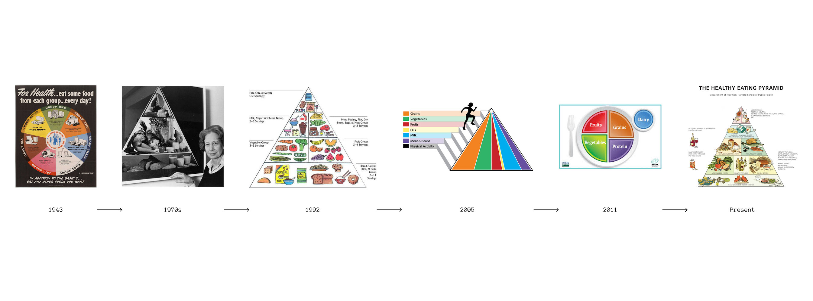
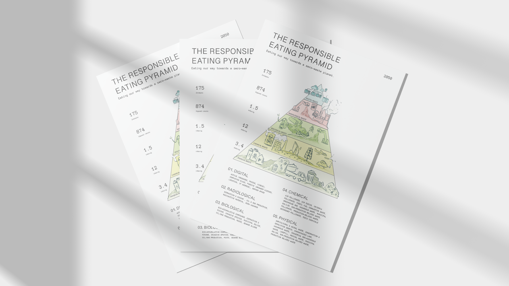
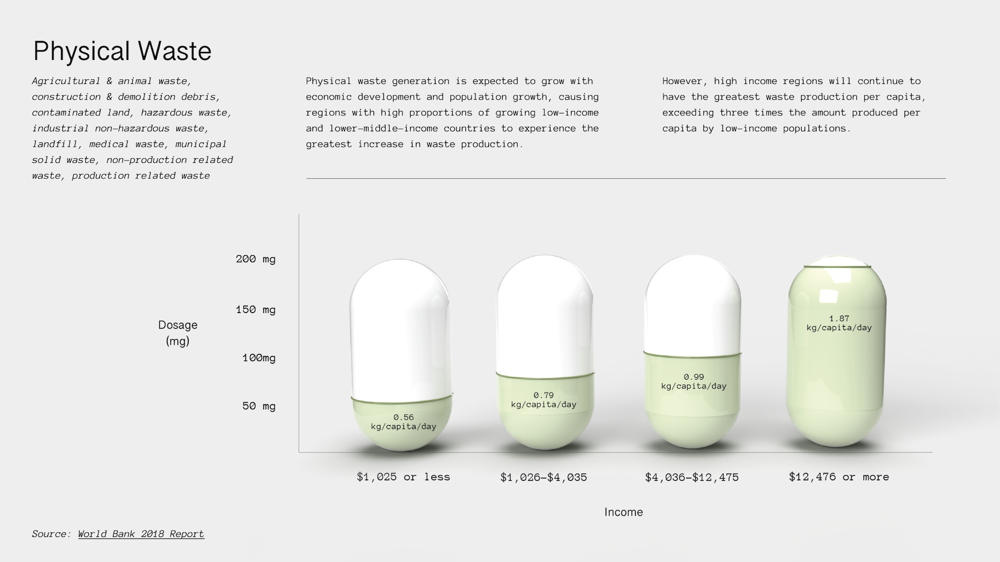
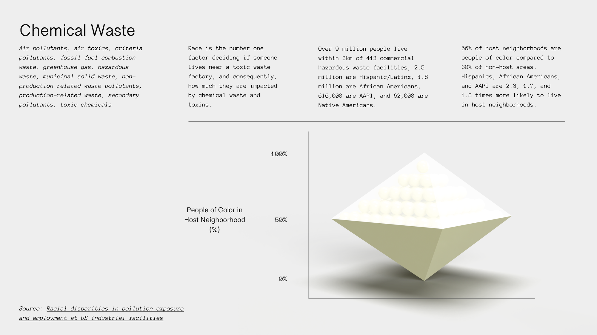
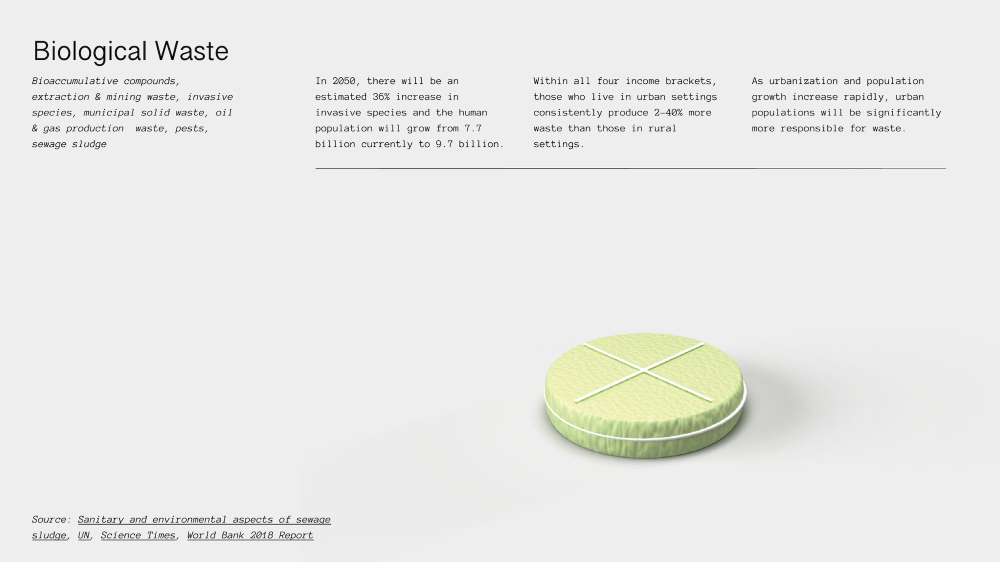
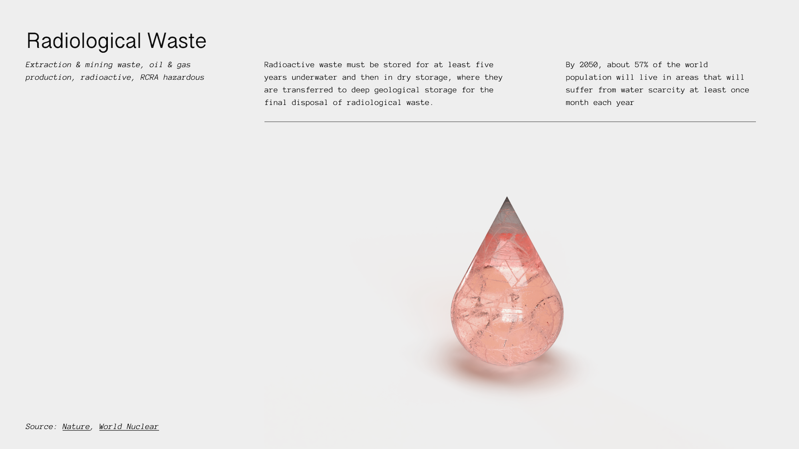
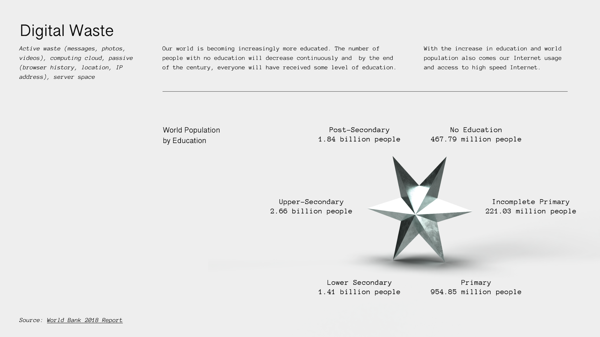

PART 1: Food Pyramid Redesign
Currently, we are unconsciously absorbing many forms of toxic waste: air pollutants, microplastics, radiation, and so much more. With predicted waste levels, human population growth, and food scarcity growing rapidly in 2050, we can change how we approach our daily physical consumption by reimagining our daily diet and nutrition habits. As our current industry is shifting towards designing for a circular economy, many methods within the design and manufacturing stage are changing. By focusing on the consumption stage of a product's life cycle, we can hold consumers and individuals accountable for the consequences of our choices, and rethink our daily physical consumption.
Although nutrition is an incredibly personalized routine that depends on culture and geography, the food pyramid, and especially the U.S. food pyramid, was designed with food prices, economics, and business interests in mind. There exists a long history of food pyramid designs and redesigns, each taking a step towards being more mindful of body shapes, sizes, and physical well-being. In a world where we consume our waste, the food pyramid would transform once again, depicting our five main sources of nutrients: physical waste, chemical waste, biological waste, radiological waste, and digital waste.
 PART 2: Personalized Supplements
As we consider the waste we produce, we must also take note that individual production levels vary based on our income, race, geographical location, and education levels. Although we won’t be able to freely eat our waste in 2050, we can receive personalized supplements, similar to multivitamins, that allow our gut bacteria to digest each type of waste.
    Studies on pill intake have shown that the rounder and smaller the pill, the easier to digest. Thus, the supplements corresponding to types of waste with less severe effects will be rounder, while those with moresevere effects will be edgier. Consequently, daily supplement intake will be different based on income, race, geographic location, and education. Privilege and responsibility go hand in hand when considering who has access to what resources and how that affects the greater ecological community.
In 2050, our world will be facing challenging issues: rapid population growth, social inequality, climate change, and so much more. As a speculative design, this project aims to rethink nutrition, consumption and responsibility in the context of environmental sustainability, and to engage in a critical conversation between the future of waste and the agency of design. How does our notion of "waste" change when we find ways to use it? How does our relationship with "waste" change when we are consciously putting it into our bodies? And most importantly, how can we redesign systems to be more sustainable and conscious of the issues present within it?
→ Fall 2021 (5 Weeks)
→ DSGN 488: Senior Design Seminar
→ Instructors: Ani Liu, Jacob Rivkin